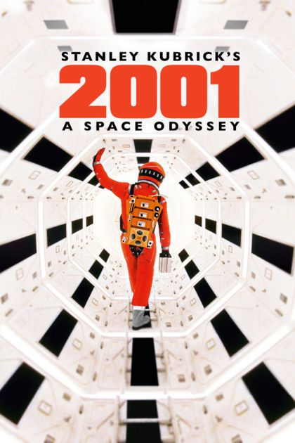

Um clássico da ficção científica que explora a jornada humana através do espaço.
Um filme icônico que aborda temas controversos e apresenta uma narrativa única.
Um filme Sovietico que aborda sobre os horrores da segunda guerra.
O CINEMA reúne sugestões simples de filmes para quem gosta de cinema e quer escolher algo para assistir sem complicação.